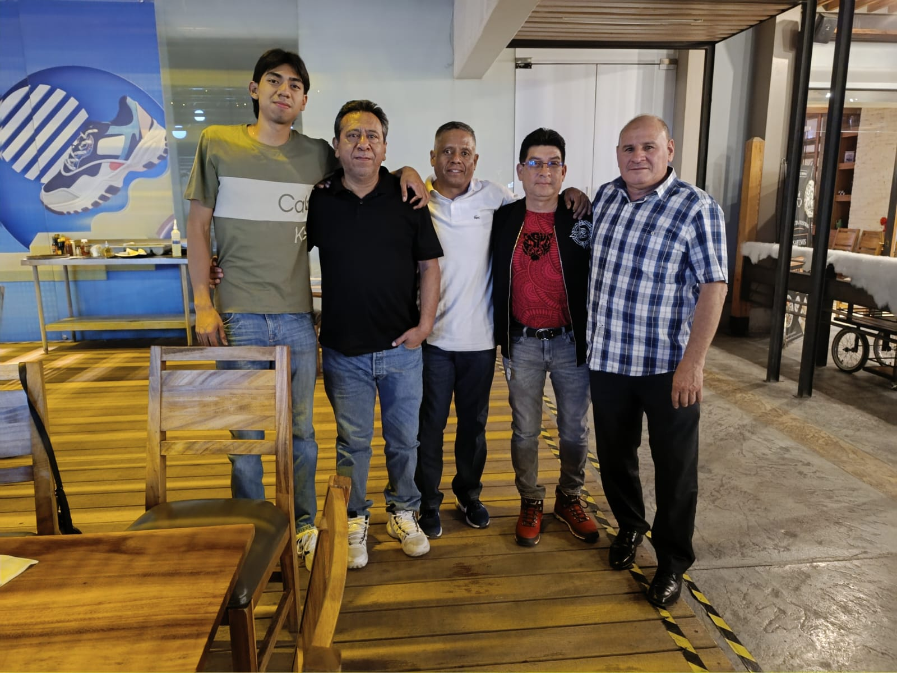

Centridek es una empresa mexicana dedicada al mantenimiento, reparación y venta de refacciones para centrífugas y decantadoras. Aunque somos una empresa joven, nuestro equipo cuenta con años de experiencia en el sector, lo cual nos permite ofrecer soluciones confiables y eficientes.
Nos especializamos en brindar un servicio profesional y personalizado, siempre enfocados en la calidad, el compromiso y la satisfacción total de nuestros clientes.



Misión
En Centridek, nuestra misión es proporcionar servicios de mantenimiento industrial con los más altos estándares de calidad, asegurando la eficiencia operativa de nuestros clientes a través de un enfoque centrado en la atención personalizada y la mejora continua.
Visión
Aspiramos a ser reconocidos como una empresa líder a nivel nacional en soluciones para centrífugas y decantadoras, distinguiéndonos por nuestra innovación tecnológica, compromiso con el cliente y crecimiento sustentable.
Valores
En Centridek, nos regimos por valores fundamentales que guían nuestras acciones y fortalecen nuestra identidad empresarial:
- Calidad: Nos comprometemos a ofrecer los mejores servicios y productos del mercado.
- Compromiso: Establecemos relaciones de confianza con nuestros clientes, proveedores y colaboradores.
- Innovación: Buscamos constantemente soluciones eficaces y actualizadas para los desafíos del sector.
- Responsabilidad: Actuamos con ética, transparencia y respeto al medio ambiente.